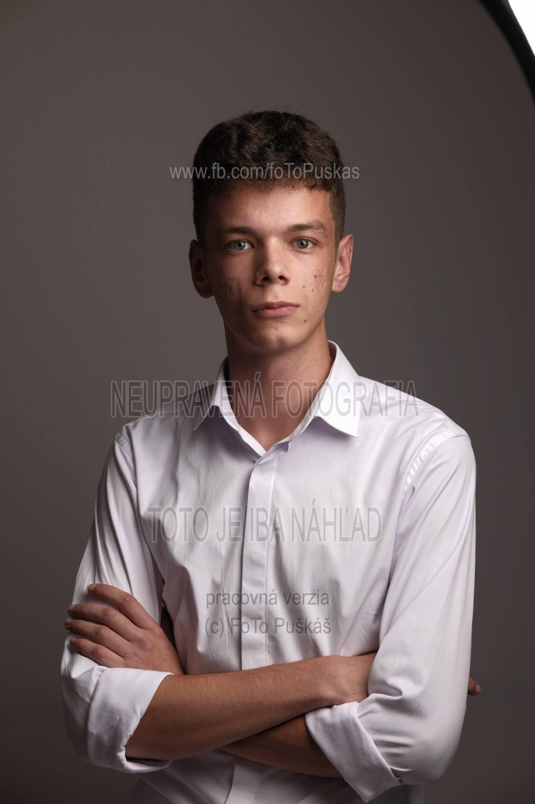

Webový dizajn
Moderný informačný portál
Čistý responzívny web vytvorený s dôrazom na ľahkú orientáciu a prehľadnosť obsahu.
Pozrieť projektAhoj, som
Tvorím moderné digitálne zážitky, ktoré majú jasný účel, intuitívne fungujú a pôsobia prehľadne.
Vybrané práce
Niekoľko ukážok práce zameranej na dizajn, funkčnosť a používateľský zážitok.
Webový dizajn
Čistý responzívny web vytvorený s dôrazom na ľahkú orientáciu a prehľadnosť obsahu.
Pozrieť projektUX / UI dizajn
Intuitívne rozhranie, ktoré zrozumiteľne zobrazuje údaje a podporuje rýchle rozhodovanie.
Pozrieť projektFrontend
Dynamická stránka pre mobil aj počítač s dôrazom na rýchlosť a jednoduché použitie.
Pozrieť projekt
Niečo o sebe
Zaujímam sa o digitálny dizajn, tvorbu webov a technológie, ktoré ľuďom zjednodušujú každodenné úlohy. Pri práci spájam estetiku s funkčnosťou a venujem pozornosť detailom.
Na svojich projektoch pracujem od prvotnej myšlienky až po výslednú stránku — od návrhu rozhrania cez vývoj až po finálne doladenie.